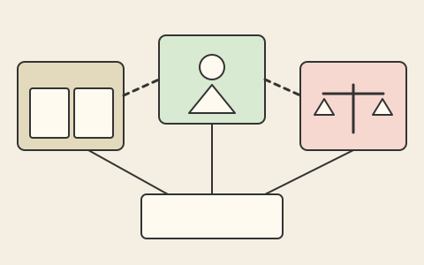
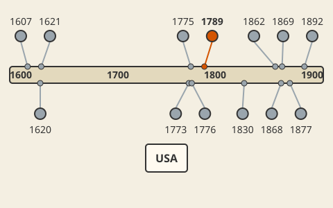

Politisches System der USA
Mit einem KI-Tutor lernen
Ein KI-Tutor erklärt dir diese Seite und hilft dir bei den Aufgaben. Wähl deinen Assistenten:
Mit Claude öffnen Mit ChatGPT öffnen Mit Mistral Vibe öffnen
Du nutzt dein eigenes Konto beim Anbieter. Der Assistent ist kein Angebot von lernapps.net: lernapps liefert nur Inhalte und Aufgaben. Die Wahl gilt für alle Seiten, nur auf diesem Gerät.
Wer entscheidet in den USA?
Mr Hill fragt, wer in den USA die Gesetze macht. Sophie fragt Jayden. Vorher eine Frage an dich.
Aufgabe
Lösung
New York
New York ist die größte Stadt, aber nicht die Hauptstadt.
Washington, D.C. richtige Antwort
Alle drei Gewalten haben ihren Sitz in der Hauptstadt Washington, D.C.
Boston
Boston ist die Hauptstadt von Massachusetts, nicht die der USA.
Die Regierung der USA sitzt in der Hauptstadt Washington, D.C.
Das kannst du danach: Du beschreibst, was Präsident, Kongress und Supreme Court tun, und erklärst, warum die Macht geteilt ist.
Jayden erklärt die Politik
- Sophie: Who decides things in the USA?
- Jayden: Three groups share the power: Congress, the President and the Supreme Court. The rules are in the Constitution. It has been in effect since 1789.
- Sophie: Is Congress the same as the President?
- Jayden: No! Congress makes the laws and decides about war. It has two parts: the Senate with one hundred senators and the House of Representatives with four hundred and thirty-five members. Each state sends two senators.
- Jayden: The President leads the government and is the commander of the army. People elect the President for four years, and he or she can only be elected again once.
- Sophie: Can the President make any law?
- Jayden: No. The President can say "no" to a law from Congress. That is called a veto. But Congress can overrule the veto if two thirds of the members of both parts vote for the law again.
- Jayden: The third group is the Supreme Court with nine judges. It can say that a law does not fit the Constitution. The President picks the judges, and the Senate says yes.
- Sophie: Why three groups?
- Jayden: So that nobody gets all the power. Each group can check the others.
- Sophie: And the states?
- Jayden: Each of the fifty states has its own government. The federal government, the states and the Native American nations share power in the USA.
| Englisch | Deutsch |
|---|---|
| Congress | der Kongress |
| the Supreme Court | das Oberste Gericht |
| in effect | in Kraft |
| the commander | der Oberbefehlshaber |
| the war | der Krieg |
| the senator | der Senator, die Senatorin |
| to vote | abstimmen, wählen |
| the nation | die Nation, das Volk |
| to share | teilen |
| the power | die Macht |
| the Constitution | die Verfassung |
| the law | das Gesetz |
| the Senate | der Senat |
| the House of Representatives | das Repräsentantenhaus |
| to elect | wählen |
| the veto | das Veto |
| to overrule | überstimmen |
| the judge | der Richter, die Richterin |
| to check | kontrollieren |
| the federal government | die Bundesregierung |
Verstehen, belegen, meinen
Aufgabe
Lösung
Richtige Antwort: Die Aussage stimmt nicht.
Die Gesetze macht der Kongress. Der Präsident kann sie mit einem Veto stoppen, aber der Kongress kann das Veto überstimmen.
Aufgabe
Lösung
Zeile 8
Zeile 8 handelt vom Supreme Court.
Zeile 12
Zeile 12 handelt von den Staaten.
Zeile 5
Zeile 5 handelt von der Wahl des Präsidenten.
Zeile 7 richtige Antwort
Hier steht, wie der Kongress ein Veto überstimmt.
Zeile 7: Zwei Drittel in beiden Teilen können ein Veto überstimmen.
Offene Aufgabe
Die Macht ist auf drei Gruppen verteilt: Wer gewinnt, wer verliert dadurch? Schreibe zwei bis drei Sätze auf Englisch, zum Beispiel mit „Nobody can … because …“.
Tipp
Schau in die Zeilen 7, 8 und 10.
Eine gute Antwort enthält:
Lösung
Nobody can decide everything because the power is shared. The President can say no to a law, but Congress can overrule the veto. A group that wants all the power loses, because the other two groups check it.
Das Schema der drei Gewalten

© CC-BY-4.0- 1 Congress: Senate and House of Representatives
- 2 President: elected for four years
- 3 Supreme Court: nine judges
- 4 Constitution: the rules for everybody
Schema, nicht genau nach Maßstab. Die gestrichelten Linien zeigen: Jede Gewalt kontrolliert die anderen.

© CC-BY-4.0Die Zeitachse ist jetzt voll. Der orange Punkt zeigt, wann die Verfassung in Kraft trat.
Merke
In den USA teilen sich drei Gewalten die Macht: die gesetzgebende (legislative), die ausführende (executive) und die rechtsprechende (judicial) Gewalt. Das Prinzip heißt checks and balances: Jede Gewalt kann die anderen kontrollieren, damit keine allein herrscht.
Übung
Aufgabe
Lösung
Richtige Antwort: Sie macht die Gesetze und entscheidet über Krieg. – Congress; Er sagt Nein zu einem Gesetz. – the President; Sie prüft, ob ein Gesetz zur Verfassung passt. – the Supreme Court
Der Kongress macht Gesetze, der Präsident kann ein Veto einlegen, der Supreme Court prüft die Gesetze an der Verfassung.
Aufgabe
Lösung
Richtige Antwort: 1. Der Kongress beschließt ein Gesetz., 2. Der Präsident legt sein Veto ein., 3. Zwei Drittel in beiden Teilen des Kongresses stimmen noch einmal dafür., 4. Das Gesetz gilt trotz des Vetos.
Erst beschließt der Kongress, dann sagt der Präsident Nein, dann überstimmt der Kongress mit zwei Dritteln.
Aufgabe
Schreibe die Sätze auf Englisch.
Tipp
Bei he, she und it hängst du in der Gegenwart ein -s an. Nach can nicht.
- Der Kongress macht die Gesetze.
- Der Präsident kann Nein sagen.
- Jeder Staat schickt zwei Senatoren.
Lösung
- Congress makes the laws. (auch richtig: Congress makes laws.)
- The President can say no. (auch richtig: The president can say no.)
- Each state sends two senators. (auch richtig: Every state sends two senators.)
Aufgabe
Hör zu und schreibe, was du hörst.
Tipp
Hör jeden Satz zweimal.
- KI
- KI
- KI
Lösung
- Congress and the Supreme Court are in Washington.
- The Senate must agree to new judges.
- People vote for their senators and representatives.
Selbst sprechen
Aufgabe
Hör zu, sprich nach und nimm dich auf. Vergleiche dann mit dem Original.
Tipp
Sprich langsam nach. Achte auf Senator, elected und representatives.
- The United States has a president and a Congress.KI
- Each senator is elected for six years.KI
- Senators and representatives work in Congress.KI
Zum Aufnehmen braucht diese Aufgabe JavaScript. Die Beispiele kannst du auch ohne anhören.
Lösung
- The United States has a president and a Congress.
- Each senator is elected for six years.
- Senators and representatives work in Congress.
Rückblick und nächster Halt
Die Zeitachse des Kapitels ist voll. Zu jedem Ereignis gehört die Frage: Wer gewinnt, wer verliert?
Die Virginia Colony beginnt
Mit der Virginia Colony beginnt die britische Besiedlung der Ostküste. Die Siedler bekommen ein neues Zuhause. Die Menschen, die dort schon lebten, müssen ihr Land nun mit Fremden teilen. (Quelle: Wikipedia, United States, https://en.wikipedia.org/wiki/United_States)
Die Mayflower erreicht Cape Cod
Pilger aus England gründen die Plymouth Colony. Sie gewinnen einen Platz für ihre Kirche, aber fast die Hälfte stirbt im ersten Winter. (Quelle: Wikipedia, Pilgrims (Plymouth Colony), https://en.wikipedia.org/wiki/Pilgrims_(Plymouth_Colony))
Friedensvertrag mit den Wampanoag
Die Pilger und Massasoit, ein Anführer der Wampanoag, schließen einen Friedensvertrag. Das Dorf Patuxet, wo die Pilger siedeln, liegt leer: Seine Bewohner sind vorher an einer Seuche gestorben. (Quelle: Wikipedia, Pilgrims (Plymouth Colony), https://en.wikipedia.org/wiki/Pilgrims_(Plymouth_Colony))
Die Boston Tea Party
Männer aus Boston werfen Tee in den Hafen, einige verkleidet als Native Americans. Sie protestieren gegen britische Regeln. Die britische Regierung antwortet 1774 mit harten Gesetzen. (Quelle: Wikipedia, Boston Tea Party, https://en.wikipedia.org/wiki/Boston_Tea_Party)
Der Krieg beginnt
Im April beginnt der Krieg zwischen Großbritannien und den Kolonien. Die Kolonisten wollen mitreden, Großbritannien will seine Kolonien behalten. (Quelle: Wikipedia, United States, https://en.wikipedia.org/wiki/United_States)
Die Declaration of Independence
Am 4. Juli nimmt der Kongress die Erklärung an: Die dreizehn Kolonien sind unabhängig. Die Kolonisten gewinnen Selbstverwaltung, Großbritannien verliert Kolonien. In allen dreizehn Kolonien ist die Sklaverei erlaubt, versklavte Menschen sind nicht frei. (Quelle: Wikipedia, United States Declaration of Independence, https://en.wikipedia.org/wiki/United_States_Declaration_of_Independence)
Die Verfassung tritt in Kraft
Drei Gewalten teilen sich die Macht: Kongress, Präsident und Supreme Court. Keine Gruppe hat alle Macht. (Quelle: Wikipedia, Constitution of the United States, https://en.wikipedia.org/wiki/Constitution_of_the_United_States)
Der Indian Removal Act
Etwa sechzigtausend Native Americans müssen aus dem Südosten nach Westen ziehen. Siedler gewinnen Land, viele Menschen sterben auf dem Weg (Trail of Tears). (Quelle: Wikipedia, Trail of Tears, https://en.wikipedia.org/wiki/Trail_of_Tears)
Der Homestead Act
Siedler bekommen hundertsechzig Acres Land gratis, wenn sie es fünf Jahre bearbeiten. Das Land lag vorher im Gebiet von Native Americans. (Quelle: Wikipedia, American frontier, https://en.wikipedia.org/wiki/American_frontier)
Der Vertrag mit den Lakota
Die Regierung gibt den Lakota ein großes Reservat mit den Black Hills. Später finden Menschen dort Gold, und der Vertrag wird gebrochen. (Quelle: Wikipedia, American frontier, https://en.wikipedia.org/wiki/American_frontier)
Die Eisenbahn von Küste zu Küste
Die erste Eisenbahn von Küste zu Küste ist fertig. Siedler und Händler kommen leichter nach Westen, und noch mehr Siedler kommen ins Land der Native Americans. (Quelle: Wikipedia, American frontier, https://en.wikipedia.org/wiki/American_frontier)
Die Nez Perce und Chief Joseph
Die Nez Perce wollen ihr Land nicht aufgeben. Sie gehen etwa zwölfhundert Meilen und kämpfen unterwegs. Native Americans leben bis heute in den USA. (Quelle: Wikipedia, American frontier, https://en.wikipedia.org/wiki/American_frontier, und United States, https://en.wikipedia.org/wiki/United_States)
Ellis Island öffnet
Hier prüft die Regierung Einwanderer aus Europa. Etwa zwölf Millionen Menschen werden bis 1954 geprüft, etwa zwei von hundert müssen zurück. (Quelle: Wikipedia, Ellis Island, https://en.wikipedia.org/wiki/Ellis_Island)
| Halt | Beispielsatz |
|---|---|
| Mayflower | The Pilgrims left England because they wanted their own church. |
| Einwanderung | Many immigrants worked on the railroads for low pay. |
| Unabhängigkeit | Some men at the Tea Party dressed like Native Americans. |
| Besiedlung des Westens | About four hundred thousand settlers walked to Oregon and California. |
| Politik | The President can only be elected again once. |
Im nächsten Kapitel, Freiheit und Gleichheit (Klasse 9 und 10), geht die Zeitachse bis heute weiter.
Fehler gefunden oder eine Idee für diese App?